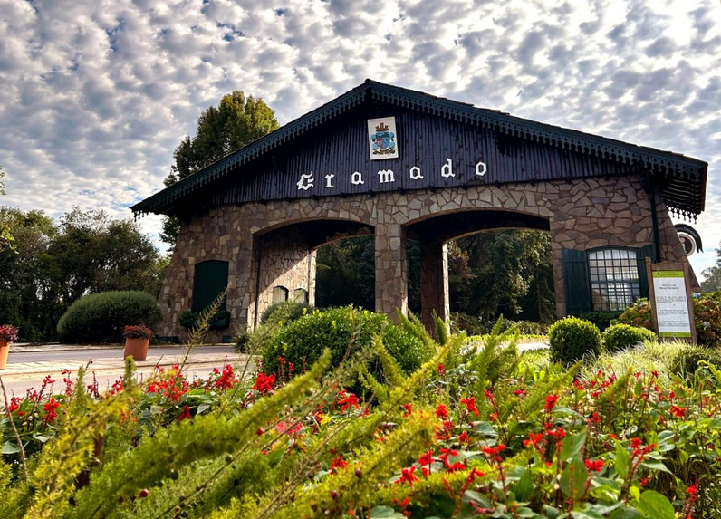

Gramado
postado 09 junho 2026
Gramado, no Rio Grande do Sul, é um dos destinos turísticos mais visitados do Brasil, conhecido por seu clima europeu, ruas floridas e arquitetura charmosa. Localizada na Serra Gaúcha, a cidade atrai visitantes durante todo o ano, especialmente no inverno, quando as temperaturas baixas e a possibilidade de geada criam um clima acolhedor e romântico.
Entre suas principais atrações estão o Lago Negro, o Mini Mundo, a Rua Coberta e os diversos parques temáticos e eventos sazonais, como o famoso Natal Luz, que transforma a cidade em um grande espetáculo de luzes e apresentações culturais. A gastronomia também é um destaque, com forte influência alemã e italiana, oferecendo chocolates artesanais, fondues e vinhos regionais.
Com infraestrutura turística bem desenvolvida, Gramado é ideal tanto para viagens em família quanto para casais em busca de lazer e experiências únicas na Serra Gaúcha.